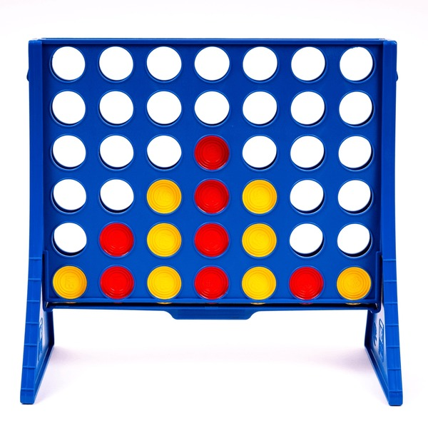

Lab 4 - Psuedocoding
Challenges
Problems
We need to turn this game into psuedocode.
Results
How 2 Pancake
1. Gather ingredients: - flour - eggs - milk - sugar (optional) - salt - butter or oil (for cooking)
2. In a bowl, add: - flour - eggs (make sure to remove shell) - milk - sugar (if using) - a pinch of salt
3. Mix ingredients until smooth batter forms
4. Heat a pan over medium heat
5. Add a small amount of butter or oil to the pan
6. Pour some batter into the pan based on personal preference of pancake size
7. Cook until bubbles form on the surface and the edges look set, you can lift a side to check doneness.
8. Flip the pancake, and cook until golden brown
9. Remove pancake from pan
10. REPEAT steps 6–9 for remaining batter
11. Serve with desired toppings (e.g., syrup, fruit, butter)
Task 3 - JS Pseudocode
//Four in a Row
// Setting up
// Assign Player 1 with Red, And Player 2 with Yellow
// Print an empty 6-row by 7-column grid with empty values
// Decide which player goes first.
// Show the current grid to players after every move.
// Prompt current player to choose a column (0 to 6).
// If the chosen column is full:
// Print "Column full, choose another.”
// Update the board
// If the chosen column is NOT full:
// place the player's token in the lowest available row in that column.
// After each move, check for 4 matching tokens:
// Horizontally
// Vertically
// Diagonally (both directions)
// If the board does not have 4 matching tokens, continue to the next step.
// Check for a Tie
// If the board is not full, continue to the next step.
// If the board is full and there is no winner, declare a tie.
// Switch Turns
// Change to the other player.
// Repeat steps 2-7 until there is a winner.
// End the Game
// If there’s a winner, display the winner and end the game.
// If it’s a tie, display a tie message.
// Offer option to restart or exit.